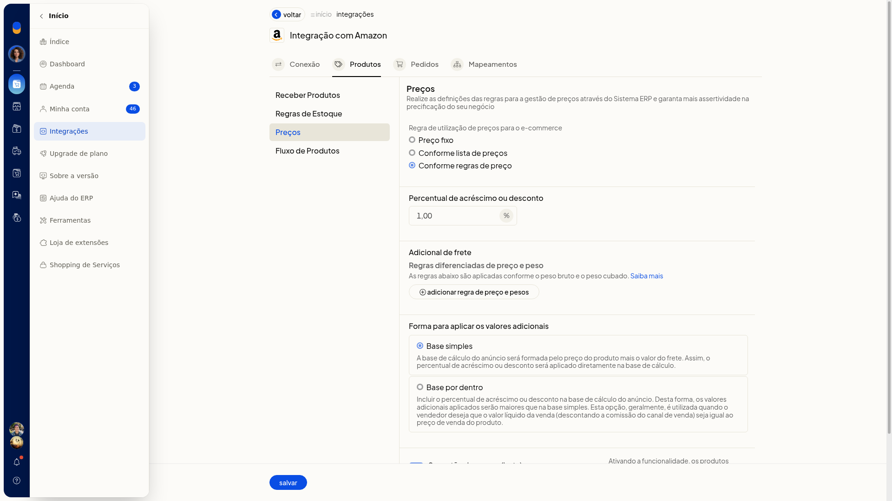

Amazon: preços competitivos
No ERP da Olist, a integração com a Amazon define o preço enviado à loja por valor fixo, lista de preços ou regras de preço. Na Amazon ERP, você também marca a sugestão de preços em Produtos > Preços.
Pré-requisitos
- O canal Amazon ERP precisa estar instalado para abrir gerenciar.
Instruções
-
Acesse Início > Integrações.
-
No card Amazon ERP, clique em gerenciar.
-
Abra a aba Produtos.
-
Clique em Preços.
-
Em Conforme regras de preço, informe o percentual com vírgula e duas casas decimais. O campo não é obrigatório.
-
Escolha Base simples ou Base por dentro.
-
Marque Sugestão de preços (beta). O controle não é obrigatório.
